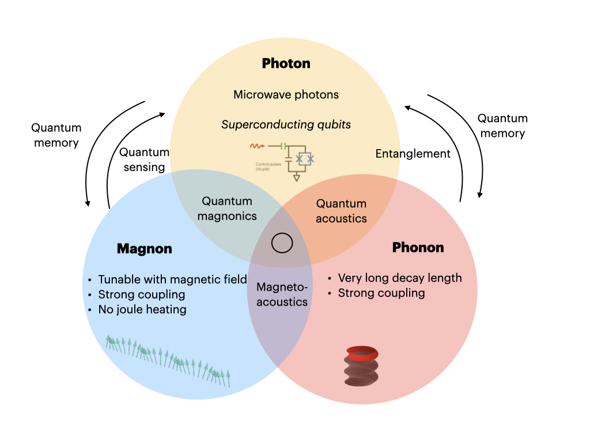

M² Lab | Microwave Magnonics Lab
마이크로파 대역의 마그논(스핀파)·포논·초전도 큐빗을 연결해 초저전력·자기장 가변·긴 코히어런스를 동시에 추구합니다. 전(全)마이크로파 양자 링크를 지향합니다.
We study magnons, phonons, and superconducting qubits in the GHz band to pursue ultra‑low‑power, field‑tunable dynamics with long coherence—toward all‑microwave quantum links.
 연구 주제 보러가기 Explore Our Research